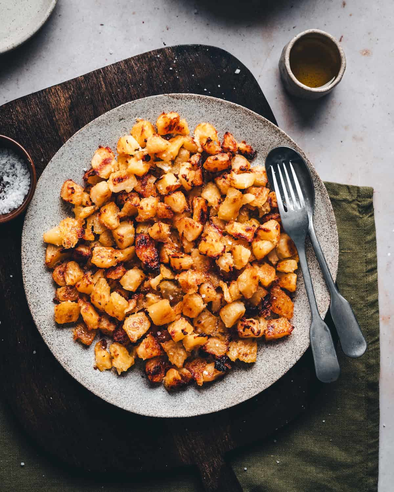

cottage potatoes

Cottage potatoes are a hearty and comforting dish typically made from diced or sliced potatoes that are pan-fried until crispy on the outside and tender on the inside. They are often cooked with ingredients like onions or shallots and seasoned with salt, spices, or herbs to enhance their flavor. The result is a savory, golden-brown dish with a satisfying texture that pairs well with eggs, meats, or vegetables. Cottage potatoes are a popular choice for morning meals, offering a warm, filling, and versatile addition to the plate.
Ingredients
- potatoes
- lime
- salt
- shallots
- secret seasoning
- salt, to taste
Steps
- Prep the ingredients: Wash and dice the potatoes into small cubes, then finely chop the shallots.
- Cook the potatoes: Heat oil in a pan over medium heat, add the potatoes, and cook until they start to become golden and tender.
- Add flavor: Stir in the shallots, salt, and secret seasoning, cooking until the shallots soften and everything is well coated.
- Finish and serve: Squeeze fresh lime juice over the potatoes, toss to combine, and serve hot.
Home